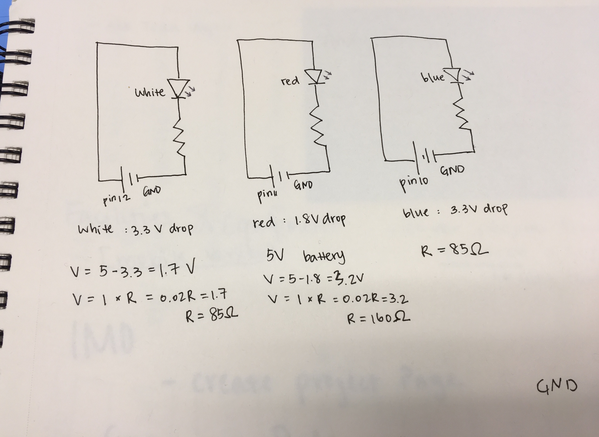
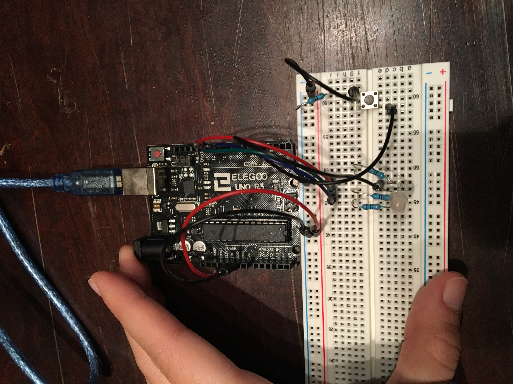

Assignment 2: Fade!
Here is all the documentation for Assignment 1!
The Schematic
 This drawing is the schematic of a RGB light and a button. Resisters are picked from assignment 1 and suggested in class.The Circuit
 This is the final set up for the circuit looping from pin9, pin10, pin11 to GND.The Code
//This allows one to press the button to trigger the RGB LED Light.
//First press result in the red light fades up, and the second push
//with hold allows one to switch color to green, then blue.
const int buttonPin = 3; //the number of the pushbutton Pin
const int red = 11; //the number of the red of the RGB light Pin
const int green = 10; //the number of the red of the RGB light Pin
const int blue = 9; //the number of the red of the RGB light Pin
int counter = 0; //the number of times one pushes the button
void setup() {
// initialize the pushbutton pin as an input:
pinMode(buttonPin, INPUT);
// initialize the LED pin as an output:
pinMode(red, OUTPUT);
pinMode(green, OUTPUT);
pinMode(blue, OUTPUT);
}
void loop() {
int buttonState; //variable for reading the pushbutton status
buttonState = digitalRead(buttonPin); //read the state of the pushbutton value
//check if the button is pressed
if (buttonState == HIGH) { //if the button is pressed
counter++; //then the number of times one pushes the button adds up
delay(500); //there is a 50 ms pause to distinguish the light change
}
else if (counter == 0) { //if the button is not pressed
digitalWrite(red, LOW); //then the RGB light doesn't light up
digitalWrite(green, LOW);
digitalWrite(blue, LOW);
}
else if (counter == 1) { //if the button has been pressed once
digitalWrite(green, LOW); //then neither green light nor blue light lights up
digitalWrite(blue, LOW);
//red light ligths up graudally
for(int brightness = 0; brightness <= 255; brightness++) {
analogWrite(red, brightness); //set red to the desire brightness
delay(5); //there is a 5 ms pause to ensure we see the change in light
}
}
else if (counter == 2) { //if the button has been pressed twice
digitalWrite(red, LOW); //then the green light lights up
digitalWrite(green, HIGH);
digitalWrite(blue, LOW);
}
else if (counter == 3) { //if the button has been pressed three times
digitalWrite(red, LOW); //then the blue light lights up
digitalWrite(green, LOW);
digitalWrite(blue, HIGH);
}
else { //otherwise, we reset the counter
counter = 0;
}
}
The Operation of the Circuit
Below is a short demo of the circuit in operation.